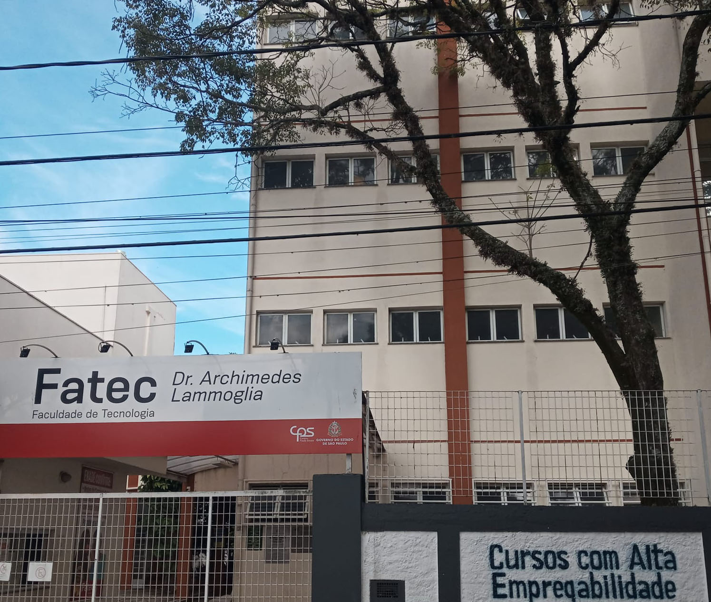

História da FATEC
As Faculdades de Tecnologia do Estado de São Paulo (FATEC) foram criadas com o objetivo de oferecer ensino superior gratuito e de qualidade, voltado para as demandas do mercado de trabalho. Desde sua fundação, a FATEC tem se destacado pela excelência acadêmica e pela formação de profissionais altamente capacitados.
Missão e Valores
- Promover educação tecnológica de qualidade
- Incentivar a inovação e o empreendedorismo
- Formar profissionais éticos e preparados para o mercado
- Contribuir para o desenvolvimento sustentável
Áreas de Atuação
- Tecnologia da Informação
- Gestão e Negócios
- Engenharia e Produção
- Meio Ambiente
- Saúde e Bem-estar
Vídeo Institucional
Assista ao vídeo e saiba como solicitar a isenção e redução para o processo seletivo: